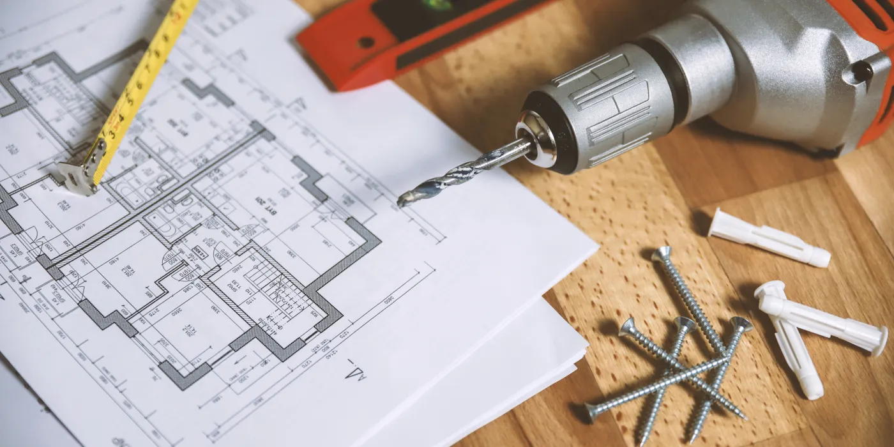
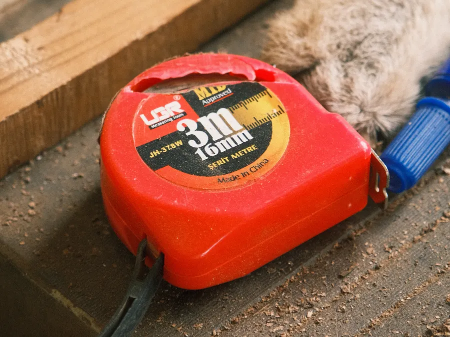

Kostnadskalkylator · Stockholm
Räkna ut ett prisintervall på under en minut
Välj projekttyp, dra i reglaget för ytan och sätt standardnivån. Du får ett intervall i kronor utan moms, räknat på samma priser som vi offererar efter besiktning.
Räkna på ditt projekt
Sex projekttyper med samma prisläge som på tjänstesidorna. Siffrorna bygger på 312 genomförda projekt i Stockholmsområdet sedan 2004.
Intervallet är ett riktmärke, inte en offert. Summan sätts efter besiktning, när vi sett stommen, elen, rördragningarna och hur vi kommer in på platsen. Ändringar beställs skriftligt innan de utförs.
Så räknar vi
Kalkylatorn gör samma tre steg som vår kalkylator gör innanför kontoret. Har du underlaget klart tar uträkningen en minut.
Priset per kvadratmeter gäller entreprenad utan moms och ligger fast per projekttyp: tillbyggnad 19 000–28 000 kr/m², badrum 17 000–30 000 kr/m², kök 14 000–26 000 kr/m², vindsinredning 12 000–21 000 kr/m², fasad 1 600–3 400 kr/m² och altan 3 800–7 200 kr/m².
Vi tar priset per kvadratmeter gånger ytan och justerar med standardfaktorn 0,9 för enkel standard, 1,0 för standard och 1,22 för högre standard. En tillbyggnad på 28 m² i Solna landade på 690 000 kr och tog 11 veckor. Ett badrum på 6,5 m² i Bromma kostade 178 000 kr och var klart efter 6 veckor. Ett kök på 14 m² på Östermalm stannade på 295 000 kr på 5 veckor.
I summan ligger rivning, material, arbete, bortforsling, tätskikt där det behövs och dokumentation av varje steg. Vitvaror, bygglovsavgifter och besiktning tillkommer och står separat i offerten. Tidsplanen följer med som ett eget blad: besiktning och mätning först, sedan stomme, installationer och ytskikt i den ordning vi skriver in i avtalet.

| Projekttyp | kr/m² | Typisk yta | Tidsplan |
|---|---|---|---|
| Tillbyggnad | 19 000–28 000 | 15–45 m² | 8–16 veckor |
| Badrum | 17 000–30 000 | 4–10 m² | 4–8 veckor |
| Kök | 14 000–26 000 | 8–20 m² | 3–6 veckor |
| Vindsinredning | 12 000–21 000 | 15–60 m² | 5–10 veckor |
| Fasad | 1 600–3 400 | 80–300 m² | 3–9 veckor |
| Altan | 3 800–7 200 | 8–60 m² | 1–3 veckor |
Samma intervall finns på varje tjänstesida. Är ditt projekt mindre än den typiska ytan i tabellen tar vi det som ett fastprisjobb i stället.
Det här påverkar priset mest
Fyra saker flyttar summan mer än material och färgval. De syns först på plats.
Tillgänglighet och transport
Trång backe, smal gränd, hiss som inte tar containern, parkeringstillstånd och avstånd till tippen. Ett projekt i Gamla stan kostar mer i logistik än samma yta i Sollentuna.
Stommens skick
Sneda väggar, gammal el, fukt i bjälklaget eller ett bärande regelsystem där ingen ritning finns. Vi öppnar och tittar innan vi sätter priset, inte efteråt.
Materialval
Trall i trä ligger på 3 800–5 400 kr/m² och komposit på 5 400–7 200 kr/m². Kakel, fönster, dörrar och köksluckor drar på samma sätt. Faktorn för högre standard är 1,22.
Tid på året
Markarbete och gjutning går långsamt i tjäle, puts och avjämningsmassa behöver torktid. Ett jobb som startar i april är billigare att planera än ett som startar i december.
Frågor om kalkylen
Det här frågar kunder oftast innan de skickar in sitt projekt.
Varför får jag ett intervall i stället för ett pris?
Ytan och projekttypen säger vad jobbet brukar kosta, men inte vad din källare ser ut. Efter besiktning lämnar vi ett fast pris skriftligt, och det är summan som gäller hela vägen till slutbesiktning.
Vad räknas som högre standard?
Större format på kakel och klinker, massivträ i stället för lamell, komposit i stället för trall, golvvärme, infällda nischer och dolda installationer. Kalkylatorn lägger på 22 procent mot standardnivån.
Hur snabbt kan ni lämna fast pris?
Vi bokar besiktning inom 5 arbetsdagar. Skriftligt förslag kommer inom 24 timmar på vardagar efter att vi varit på plats. Brådskar det ringer du 070-000 00 00, jour har vi vardagar 17:00–21:00 för pågående projekt.
Vill du ha summan i stället för intervallet?
Skicka in projektet från kalkylatorn. Vi läser igenom, bokar besiktning och lämnar ett fast pris med tidplan i veckor.
21 år i branschen · 312 projekt i Stockholmsområdet · 5 års garanti enligt AB 04